材料 9個分
※粉量を変えると自動計算されます
生地
フィリング
作り方
生地
STEP 1
仕込み水を作る
ぬるま湯に砂糖とドライイーストを加え、よく混ぜ合わせます。
ぬるま湯に砂糖とドライイーストを加え、よく混ぜ合わせます。
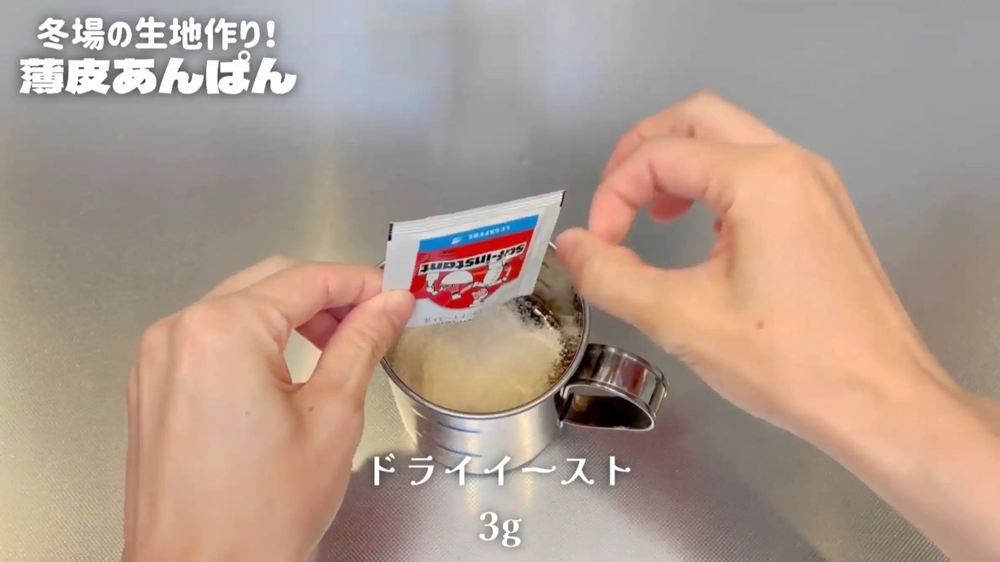
STEP 2
粉類と仕込み水を混ぜ合わせる
強力粉と塩を混ぜ合わせ、仕込み水を加えてヘラで2分ほど混ぜます。粉気がなくなり、生地がひとまとまりになればOKです。
強力粉と塩を混ぜ合わせ、仕込み水を加えてヘラで2分ほど混ぜます。粉気がなくなり、生地がひとまとまりになればOKです。
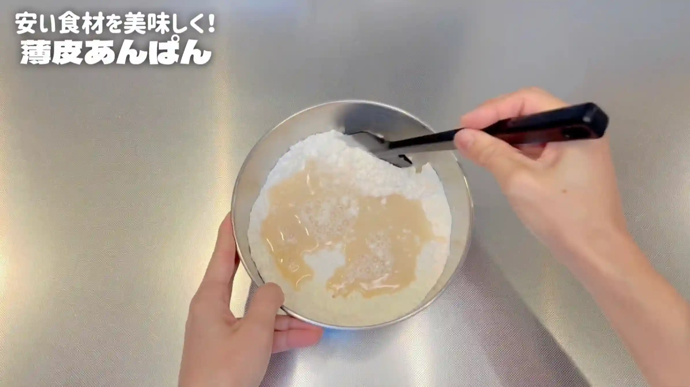
STEP 3
バターを加え、手で捏ねる
バターを加え、手で3分ほど捏ねます。途中生地がベタついてきますが、ここでは生地をツルッとするまで捏ね上げる必要はなく、短時間の「ちょい捏ね」で仕上げます。
バターを加え、手で3分ほど捏ねます。途中生地がベタついてきますが、ここでは生地をツルッとするまで捏ね上げる必要はなく、短時間の「ちょい捏ね」で仕上げます。
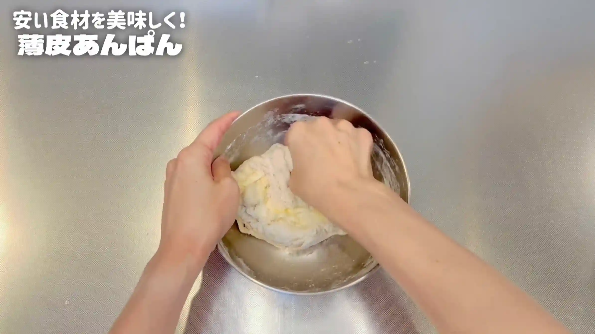
STEP 4
室温で15分おく
乾燥しないようにラップをして、生地を休ませます。ここでもまだ生地がツルッとしていなくても大丈夫です。
乾燥しないようにラップをして、生地を休ませます。ここでもまだ生地がツルッとしていなくても大丈夫です。
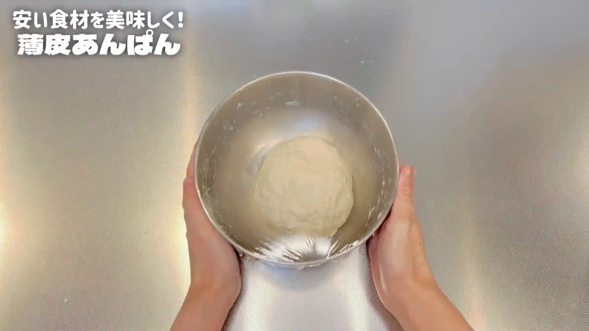
STEP 5
生地をボウルの中で叩く（[動画 04:19]）
生地をボウルの中で1分ほど叩きます。最初は少しベタつきますが、叩いていくうちにベタつきが取れ、生地の表面がツルッとなめらかになってきたらOKです。
生地をボウルの中で1分ほど叩きます。最初は少しベタつきますが、叩いていくうちにベタつきが取れ、生地の表面がツルッとなめらかになってきたらOKです。
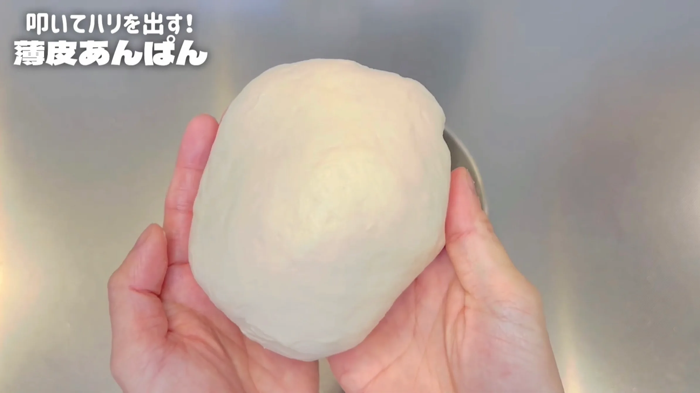
STEP 6
生地が2倍の大きさに膨らむまで室温におく
乾燥しないようにラップをして、一次発酵させます。1時間を目安に、生地が元の約2倍に膨らんだら次の工程へ進みます。発酵時間は室温によって変わるため、生地の膨らみを確認して判断してください。
乾燥しないようにラップをして、一次発酵させます。1時間を目安に、生地が元の約2倍に膨らんだら次の工程へ進みます。発酵時間は室温によって変わるため、生地の膨らみを確認して判断してください。
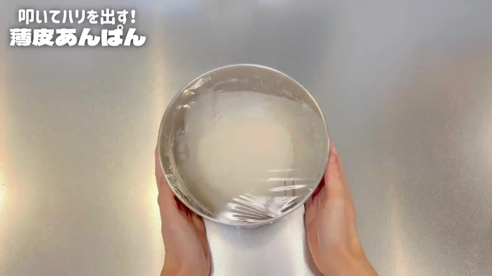
STEP 7
生地を9分割する（約43g/個）
生地を9等分し、それぞれ約43gになるように分けます。できるだけ大きさをそろえておくと、あんこを包んだときの大きさや焼き上がりもそろいやすくなります。
生地を9等分し、それぞれ約43gになるように分けます。できるだけ大きさをそろえておくと、あんこを包んだときの大きさや焼き上がりもそろいやすくなります。
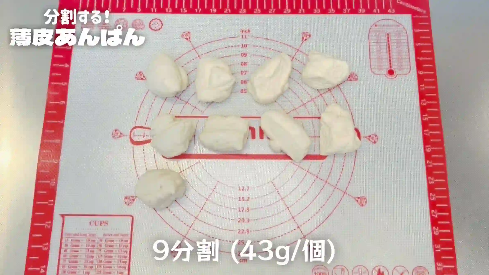
STEP 8
生地を丸め、室温で15分おく
それぞれ表面がなめらかになるように丸め、乾燥しないようにラップをして15分ほど休ませます。生地を休ませることでゆるみ、この後の成形で伸ばしやすくなります。
それぞれ表面がなめらかになるように丸め、乾燥しないようにラップをして15分ほど休ませます。生地を休ませることでゆるみ、この後の成形で伸ばしやすくなります。
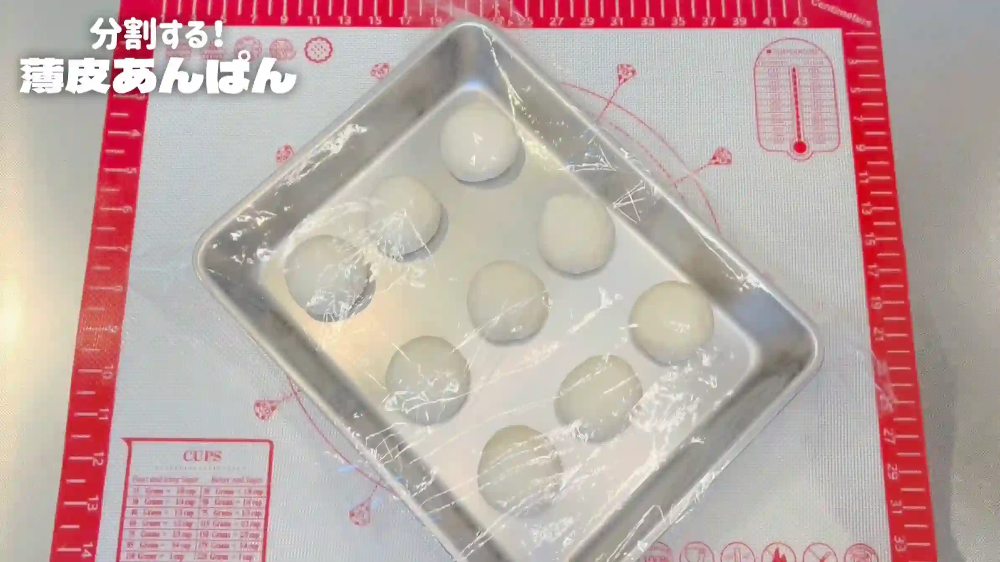
STEP 9
あんこの準備をする
STEP 10
生地を10㎝に広げる（[動画 08:46]）
生地を10㎝ほどの円形に広げます。このとき、中央は少し厚みを残し、周りを薄くするように広げます。あんこを包んで焼いたときに、生地とあんこの間に空洞ができにくくなります。
生地を10㎝ほどの円形に広げます。このとき、中央は少し厚みを残し、周りを薄くするように広げます。あんこを包んで焼いたときに、生地とあんこの間に空洞ができにくくなります。
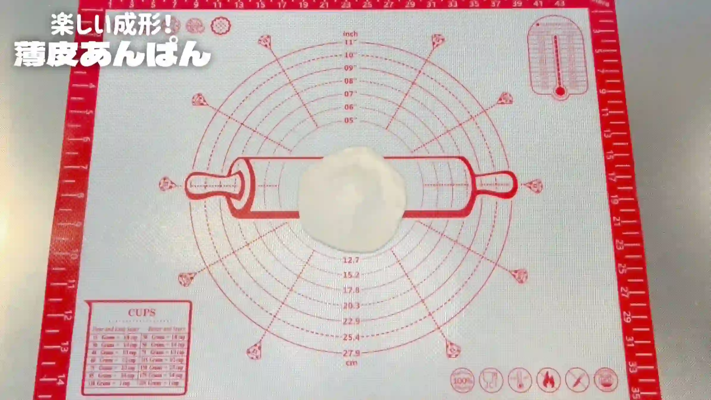
STEP 11
生地の中心にあんこを置く
生地の中心にあんこをのせます。今回は生地とあんこをほぼ1：1の割合にして、あんこをたっぷり包みます。
生地の中心にあんこをのせます。今回は生地とあんこをほぼ1：1の割合にして、あんこをたっぷり包みます。
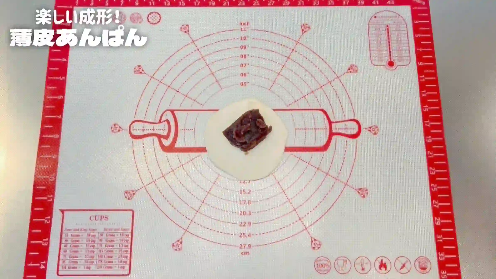
STEP 12
生地の上下、左右を閉じる（[動画 10:02]）
生地の上下、左右を閉じ、あんこを包み込みます。
生地の上下、左右を閉じ、あんこを包み込みます。
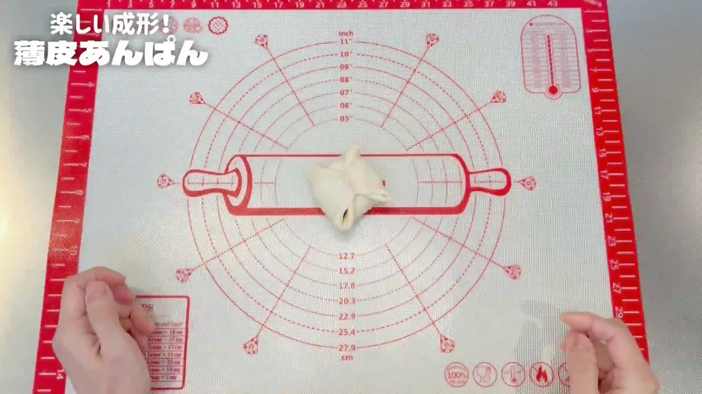
STEP 13
生地の角と角を閉じる（[動画 10:16]）
残った4つの角も、しっかり閉じます。あんこがはみ出さないよう、生地同士をきちんと合わせて閉じておきます。
残った4つの角も、しっかり閉じます。あんこがはみ出さないよう、生地同士をきちんと合わせて閉じておきます。
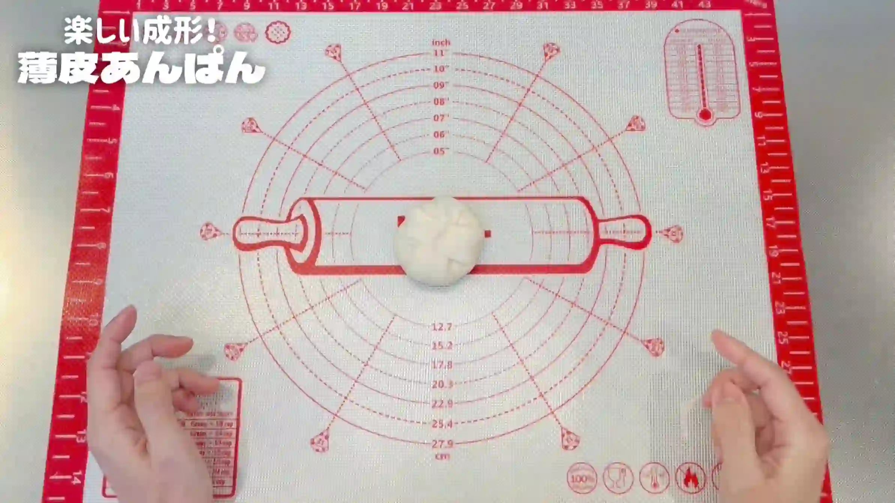
STEP 14
形を整えて、天板にのせる
軽く形を整え、とじ目を下にして天板にのせます。
軽く形を整え、とじ目を下にして天板にのせます。
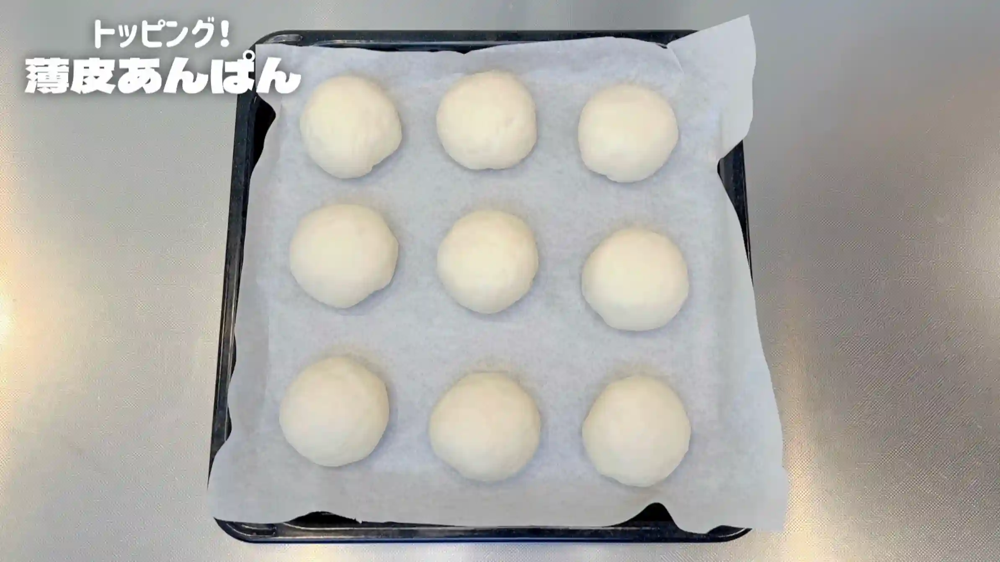
STEP 15
トッピングをして室温で40分おく
お好みで桜の塩漬けなどをトッピングし、乾燥しないようにラップをして二次発酵させます。40分を目安に、生地がふっくらと膨らんできたら次の工程へ進みます。
お好みで桜の塩漬けなどをトッピングし、乾燥しないようにラップをして二次発酵させます。40分を目安に、生地がふっくらと膨らんできたら次の工程へ進みます。
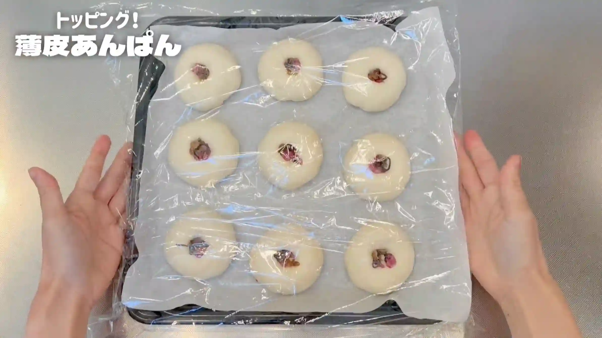
STEP 16
オーブンを190℃に予熱する
焼成前にオーブンを190℃までしっかり予熱しておきます。
焼成前にオーブンを190℃までしっかり予熱しておきます。
STEP 17
牛乳を塗り、オーブン190℃で18分焼く
焼成前に生地の表面へ牛乳を薄く塗ります。表面にきれいな焼き色がつきやすくなり、香ばしい仕上がりになります。焼き時間は目安とし、表面がきつね色になるまで焼いてください。
焼成前に生地の表面へ牛乳を薄く塗ります。表面にきれいな焼き色がつきやすくなり、香ばしい仕上がりになります。焼き時間は目安とし、表面がきつね色になるまで焼いてください。
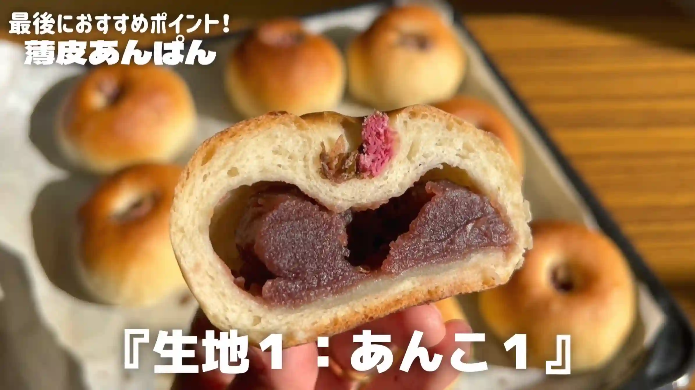
あんこの準備
STEP 1
あんこの袋の端を切って、ひらく
今回はトップバリュのあんこを使っています。量とあんこの硬さがちょうどよく、このレシピには使いやすいあんこでした。あんこの袋の端を切り、袋を開いて平らにします。袋からあんこを出して丸める必要がないので、手を汚さずに準備できます。
今回はトップバリュのあんこを使っています。量とあんこの硬さがちょうどよく、このレシピには使いやすいあんこでした。あんこの袋の端を切り、袋を開いて平らにします。袋からあんこを出して丸める必要がないので、手を汚さずに準備できます。
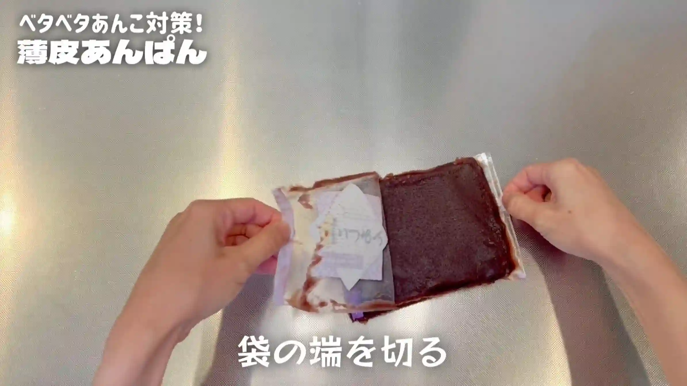
STEP 2
9分割する
スケッパーなどを使い、あんこを9等分します。あんこは計量したり丸めたりすると手がベタつくため、今回は目分量で分けていきます。
スケッパーなどを使い、あんこを9等分します。あんこは計量したり丸めたりすると手がベタつくため、今回は目分量で分けていきます。
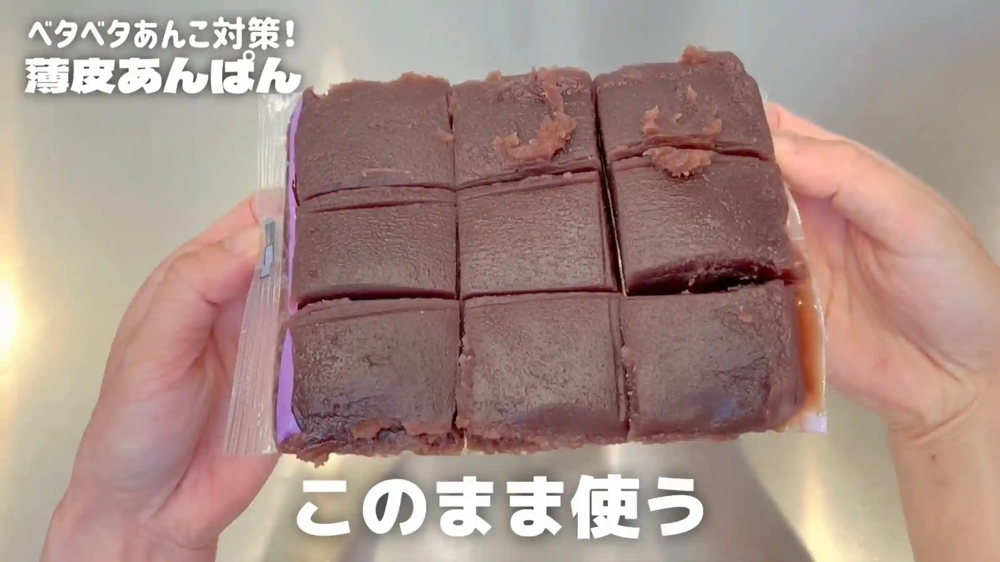
動画でチェック
おいしく作るためのワンポイントコラム
面倒なあんこ玉は作らず、あんこは袋のままカットして使います！手を汚さずに、あんこがぎっしり詰まった『薄皮あんぱん』が作れる、イオンの身近な食材を使った手軽なレシピです。
生地は『ちょい捏ね』、生地とあんこの比率は1：1。身近な材料できれいに美味しく焼き上げるための大切なポイントを、3つにまとめました。
① 生地作りのコツ
今回は生地を『ちょい捏ね』で作るのがポイント。ボウルの中で3分捏ねて、1分叩くだけで、ツルッとした生地ができあがります。あとは常温でゆっくり発酵を待つだけでOK。難しい工程を省いて、楽しく気楽にできるのがこの作り方のいいところですね！
② あんこのコツ
「事前にあんこ玉を作っておく」というレシピもよく見かけますが、手にあんこがくっついてしまい、このあんこ玉を作ること自体が意外と難しいですよね。そこで今回は、あんこを袋の状態のまま使います。袋を切り開いて、あんこをスケッパーで分割するだけなので、手を汚さずに作業できるのがいいですね。また、あんこ選びのコツとしては水分が少ない『固め』を選ぶのがコツ。ゆるいあんこは生地にくっついて包むのが難しくなり、水分が多いので焼いた時に大きな空洞ができやすくなります。レシピで使っているトップバリュのあんこは、お手軽さも含めてとてもおすすめです！
③ 薄皮のコツ
生地とあんこの比率ですが、包みやすさと焼き上がりの満足感を両立した『生地1：あんこ1』で作るのがコツ。包むときは、生地をなるべく大きく広げることで、あんこがはみ出ることなく綺麗に包むことができます。
「甘さ・固さ・量」のバランスが良いあんこを探し求めていましたが、トップバリュのあんこはまさにドンピシャでした！味はもちろん、固さもちょうど良く、1袋でピッタリ使い切れます。あんぱん作りにぴったりの材料で、皆さんもぜひ可愛い薄皮あんぱんを焼いてみてください！
生地は『ちょい捏ね』、生地とあんこの比率は1：1。身近な材料できれいに美味しく焼き上げるための大切なポイントを、3つにまとめました。
① 生地作りのコツ
今回は生地を『ちょい捏ね』で作るのがポイント。ボウルの中で3分捏ねて、1分叩くだけで、ツルッとした生地ができあがります。あとは常温でゆっくり発酵を待つだけでOK。難しい工程を省いて、楽しく気楽にできるのがこの作り方のいいところですね！
② あんこのコツ
「事前にあんこ玉を作っておく」というレシピもよく見かけますが、手にあんこがくっついてしまい、このあんこ玉を作ること自体が意外と難しいですよね。そこで今回は、あんこを袋の状態のまま使います。袋を切り開いて、あんこをスケッパーで分割するだけなので、手を汚さずに作業できるのがいいですね。また、あんこ選びのコツとしては水分が少ない『固め』を選ぶのがコツ。ゆるいあんこは生地にくっついて包むのが難しくなり、水分が多いので焼いた時に大きな空洞ができやすくなります。レシピで使っているトップバリュのあんこは、お手軽さも含めてとてもおすすめです！
③ 薄皮のコツ
生地とあんこの比率ですが、包みやすさと焼き上がりの満足感を両立した『生地1：あんこ1』で作るのがコツ。包むときは、生地をなるべく大きく広げることで、あんこがはみ出ることなく綺麗に包むことができます。
「甘さ・固さ・量」のバランスが良いあんこを探し求めていましたが、トップバリュのあんこはまさにドンピシャでした！味はもちろん、固さもちょうど良く、1袋でピッタリ使い切れます。あんぱん作りにぴったりの材料で、皆さんもぜひ可愛い薄皮あんぱんを焼いてみてください！


今回は、あふれんばかりのあんこを贅沢に包み込んだ「薄皮あんぱん」のレシピです！特別な道具を使わず、身近な食材で手軽に作れるおうちパンです。コラムでは「生地作りのコツ」「あんこのコツ」「薄皮のコツ」の3つのコツをご紹介します。